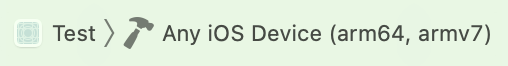
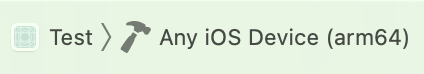

一、类库分类
- 静态库：
- .a二进制库：使用时还需要将.h头文件及资源文件（比如图片等）拖入到工程项目中，配置一些header、lib路径之类的；使用起来比较麻烦；
- .framework库：Apple平台独有，其本质是将.a库文件、.h头文件及资源文件打包在一起的包文件；使用时直接将其拖到工程项目中即可，或在
General->Link Binary With Libraries中添加使用；
- 动态库：
- .tdb库：Xcode 7（iOS9）开始使用，之前名称为.dylib；在
General->Link Binary With Libraries中添加使用； - .framework库：必须在
General->Embedded Binaries中添加使用；
- .tdb库：Xcode 7（iOS9）开始使用，之前名称为.dylib；在
区别：
- 对于静态库：
- 在链接时，Xcode会自动从库文件中，筛选出相应的架构，之后合并到主程序的二进制文件中；
- 在打包时，Xcode会自动忽略库文件中不使用的架构，如会忽略x86_64等模拟器使用的架构；
对于动态库：
- 在编译时，Xcode会直接拷贝整个动态framework文件到最终的.ipa中，只有在App真正启动运行时，才会进行动态链接；
- 但是苹果不允许上传到App Store Connect后台的.ipa包含x86_64等模拟器的架构（报Invalid错误）；所以对于工程中的动态framework，在打Release包时，一般会通过执行命令脚本的方式移除这些Invalid Architectures；
- 通过CocoaPods集成动态库时，其会自动添加一个shell脚本（[CP] Embed Pods Frameworks），用于移除不需要的架构；
通过Carthage集成动态库时，需要手动配置相关shell脚本，用于移除不需要的架构；
/usr/local/bin/carthage copy-frameworks
- 对于静态库：
二、类库类型支持
Xcode 6（iOS8）之前：
- 出于安全考虑，Xcode只支持创建.a静态库（注意需要将相关的.h头文件public出来）；不支持创建.framework静态库，但是可以通过第三方工具创建（如iOS-Universal-Framework），这种被称为伪（Fake）Framework；
- 一般情况下都使用第三方工具创建.framework静态库，因为这样之后使用起来比.a形式更方便；
- Xcode也不支持创建任何形式的动态库；
.tdb/.dylib动态库、.framework动态库都是系统内置的（如libz.dylib、UIKit.framework），故开发者只能使用系统内置的动态库；

Xcode 6（iOS8）开始：
- Xcode支持创建.a静态库、.framework静态库（修改Mach-O Type，默认为动态库）；
Xcode也支持创建.framework动态库了，但这是一种特殊的动态库（使用时需要被添加到
Embedded Binaries中，并且添加后也会默认自动添加到Link Binary With Libraries中）；其只支持主程序和扩展程序共用该动态库，其他应用还是无法进行共用，这和系统的（如UIKit.framework）还是有着很大区别的；
Xcode 6（iOS8）发布了Swift 1.0，但是Swift不支持静态库（.a、.framework），只支持动态库（.tdb/.dylib、.framework）；从Xcode 9开始，Swift 4.0支持静态库；
CocoaPods在纯ObjC项目中，默认将第三方库源码编译成.a静态库集成到项目中；若含有Swift的类库则必须添加
use_frameworks!标识（纯ObjC项目中也可以使用该标识），进而生成.framework动态库；Carthage只支持生成.framework动态库（原因：Carthage是通过Swift语言编写而成的），故其支持的项目最低版本为8.0；
三、iPhone设备CPU架构
CPU架构
- a. 模拟器：
- i386（32位）：iPhone 4s~5c；
- x86_64（64位）：iPhone 5s~...；
- b. 真机：
- armv7（32位）：iPhone 3gs~4s；
- armv7s（32位）：iPhone 5~5c；
- arm64（64位）：，iPhone 5s~...；
- 只支持armv7架构，也可以运行在armv7s架构上；
- a. 模拟器：
CPU架构演进
年份 芯片 架构 设备 2013 A7 arm64 iPhone 5S 2014 A8 arm64 iPhone 6/6P 2015 A9 arm64 iPhone 6S/6SP 2016 A10 arm64 iPhone 7/7SP 2017 A11 arm64 iPhone 8/8SP/X 2018 A12 arm64e iPhone XS/XS Max/XR 生成库类型
- a. 通过修改Xcode编译的目标设备（模拟器、
Generic iOS Device或真机），可以分别生成模拟器的库、真机的库； - b. 通过修改Xcode编译的Scheme（
Run->Build Config），可以分别生成Debug、Release的库； c. Xcode在Debug模式下，默认只会生成Active平台的CPU架构；
- 比如模拟器iPhone 5为i386，iPhone 6为x86_64，真机情况下为armv7、arm64两种架构(armv7s被Apple舍弃了)；通过
lipo -info命令查看； - 修改Build Settings的
Build Active Architecture Only为No，则生成所有的CPU架构； Xcode 12开始，App的最低支持版本也会影响，默认生成的CPU架构；
最低支持版本iOS 10：

最低支持版本iOS 11：

注意：Apple M1下，Xcode编译的模拟器的库为arm64架构，但真机使用不了该库；若此时进行合并真机的库，则因为arm64冲突，合并失败；解决方法:
- 办法1：合并前去掉模拟器的库的arm64（
lipo -remove）； - 办法2：若必须合并两个arm64架构，可以使用.xcframework代替.framework、.a；
- 办法1：合并前去掉模拟器的库的arm64（
- 比如模拟器iPhone 5为i386，iPhone 6为x86_64，真机情况下为armv7、arm64两种架构(armv7s被Apple舍弃了)；通过
d. 可以使用
lipo -create命令合并相关的库文件；e.
Valid Architectures（VALID_ARCHS）- Xcode 12-：与Architectures（ARCHS）配合使用（取交集），用来配置需要的架构；
- Xcode 12=+：被废弃移除了；
- 若之前修改配置过该值（不再是默认值），则Xcode自动将其迁移到
User-Defined -> VALID_ARCHS； - Xcode 12新增
Excluded Architectures（EXCLUDED_ARCHS），用来配置不需要的架构；
- 若之前修改配置过该值（不再是默认值），则Xcode自动将其迁移到
- a. 通过修改Xcode编译的目标设备（模拟器、
通用（合成）库类型
- 使用Xcode编译一次只会生成一种类型的库，可以使用
Aggregate Target生成多种类型的合成库； 新建
Aggregate Target，添加Run Script，添加以下类似内容（参考http://blog.csdn.net/qq_16706275/article/details/45913269）：# Sets the target folders and the final framework product. # 如果工程名称和Framework的Target名称不一样的话，要自定义FMKNAME # 例如: FMK_NAME = "MyFramework" FMK_NAME=${PROJECT_NAME} # Install dir will be the final output to the framework. # The following line create it in the root folder of the current project. INSTALL_DIR=${SRCROOT}/Products/${FMK_NAME}.framework # Working dir will be deleted after the framework creation. WRK_DIR=build DEVICE_DIR=${WRK_DIR}/Release-iphoneos/${FMK_NAME}.framework SIMULATOR_DIR=${WRK_DIR}/Release-iphonesimulator/${FMK_NAME}.framework # -configuration ${CONFIGURATION} # Clean and Building both architectures. xcodebuild -configuration "Release" -target "${FMK_NAME}" -sdk iphoneos clean build xcodebuild -configuration "Release" -target "${FMK_NAME}" -sdk iphonesimulator clean build # Cleaning the oldest. if [ -d "${INSTALL_DIR}" ] then rm -rf "${INSTALL_DIR}" fi mkdir -p "${INSTALL_DIR}" cp -R "${DEVICE_DIR}/" "${INSTALL_DIR}/" # Uses the Lipo Tool to merge both binary files (i386 + armv6/armv7) into one Universal final product. lipo -create "${DEVICE_DIR}/${FMK_NAME}" "${SIMULATOR_DIR}/${FMK_NAME}" -output "${INSTALL_DIR}/${FMK_NAME}" rm -r "${WRK_DIR}" open "${INSTALL_DIR}"
- 使用Xcode编译一次只会生成一种类型的库，可以使用
四、资源文件处理
对于.a静态库
a. 因为无法在.a文件中存放资源文件，需要将资源文件打包放在一个后缀为.bundle的文件夹中；
b. 使用时需要手动添加.bundle到主项目中，之后通过以下方式使用：
[UIImage iamgeNamed:"A.bundle/test.png"];
对于.framework静、动态库
a. .framework文件本质上也是一个bundle文件；
b. 可以将资源文件直接（或打包成.bundle后）放在.framework文件中，也可以将资源文件打包成.bundle后与.framework文件独立开来；
c. 需要注意的是：Xcode在添加.framework到项目中的时候，不会添加.framework中的资源文件到项目中（添加.bundle会自动添加的），故无法其中的资源无法使用；必须在
Copy Bundle Resources中添加对应的.framework，之后通过以下方式使用：// .framework中直接包含图片 [UIImage iamgeNamed:"A.framework/test.png"] // .framework中还有bundle，bundle中包含图片 [UIImage iamgeNamed:"A.framework/A.bundle/test.png"] // 路径 [[NSBundle mainBundle] pathForResource:@"a.framework/a.bundle/test.png" ofType:nil];d. 一般情况下，建议将资源文件和framework分开使用；（参考
http://www.cocoachina.com/bbs/read.php?tid-1676834-page-2.html、http://www.cnblogs.com/mylizh/p/3971428.html）
注意：
a. 对于无xib的资源可以直接新建文件夹后，修改后缀名为.bundle即可手动创建bundle文件；Bundle是静态的，故手动创建bundle文件的内部资源文件无法被编译；
b. 对于有xib的资源，需要新建Bundle Target（选择macOS的Bundle Target，之后修改Build Setting -> Base SDK为iOS；iOS没有该类型的Target），将xib添加到该Target后，编译运行将xib文本文件编译成nib二进制文件，最终创建bundle文件；
c. nib与xib的区别：nib是二进制文件，xib是xml文本文件，xib是用来替代nib的；当程序编译时将xib编译序列化（调用encodeWithCoder方法）为nib，使用时将nib反序列化（调用initWithCoder方法）为xib；
五、补充知识
若需要边开发边调试类库：在现有工程中添加一个库Lib Target，设置一些相关配置（默认情况下自动添加，比如主Target的Build Phases的Target Dependencies添加lib Target、Embedded Binaries添加Lib、Link Binary With Libraries添加Lib、Public头文件、Copy Bundle Resources等），之后就可以进行调试；
若静态库中使用了分类，则在使用时需要在
other linker flags中增加-ObjC配置，否则报selector not recognized运行时错误；都是.framework后缀名的库文件，通过
file .framework中的库文件命令区分是静态库，还是动态库；
六、XCFramework
Xcode 11开始支持，用于替代.framework，可以是静态库，也可以是动态库；
- 包含模拟器和真机（和之前的.framework没有区别）；
- 包含多个平台（之前不同的平台，需要创建不同的库）；
- 可以包含其他第三方库等；
- 上传到App Store Connect后台，不用将.xcframework中的不需要的架构移除，.framework还要用脚本进行移除；
创建.xcframeworks和之前创建.framework步骤一样，只是需要在
Build Setting中设置Build Libraires For Distribution为YES；对于多架构的.framework，需要使用
lipo命令进行合成；对于多架构的.xcframework，可以使用xcodebuild命令进行合成；可以将.a和头文件转化为.xcframework；如
xcodebuild -create-xcframework -library ~/Debug-iphonesimulator/libMyLibrary.a -headers ~/Debug-iphonesimulator/include/MyLibrary -library ~/Debug-iphoneos/libMyLibrary.a -headers ~/Debug-iphoneos/include/MyLibrary -output MyLibrary.xcframework
七、Xcode 12
1、Apple M1（只能运行Xcode 12=+）, Xcode 12，模拟器运行，报
building for iOS Simulator, but linking in object file built for iOS, for architecture arm64错误；- 原因：Apple M1，Xcode 12模拟器的库需要的是arm64架构；但是很多第三方针对模拟器编译后的库并不包含arm64，因此报错；
真正解决方法：使用Rossetta 2运行Xcode；而设置Excluded Architectures移除arm64是都是无效的；- 参考：
https://www.jianshu.com/p/5f5aaf0fc56d、
2、Xcode 12.3，模拟器运行（真机运行同理），报
Building for iOS Simulator, but the linked and embedded framework 'xxx.framework' was built for iOS + iOS Simulator.错误；- 原因：Xcode 12.3开始，不允许使用类似于“模拟器的库 + 真机的库”这种含有多架构的库（x86_64+armv7+arm64）；因为模拟器的库和真机的库都有arm64了；
- 解决办法有4种方式：
- 方式1：Files -> WorkSpace Setting -> Build System -> Legacy Build System（Deprecated）；
- 方式2：Build Setting -> Build Options -> Validate WorkSpace -> YES；
- 方式3：改用.xcframework；
- 方式4：改为只包含“模拟器库”或“真机库”的库；（如CocoaPods、Carthage的处理）
- 参考：
https://blog.csdn.net/qq_43377749/article/details/111592751